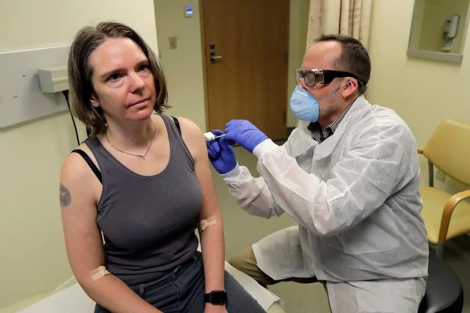
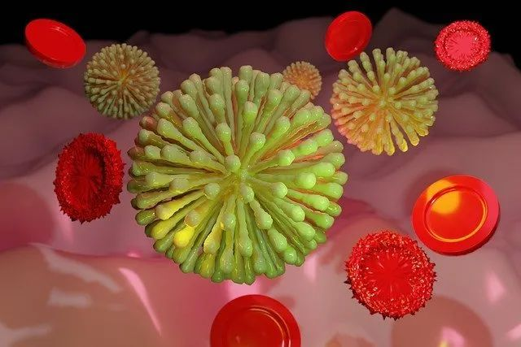
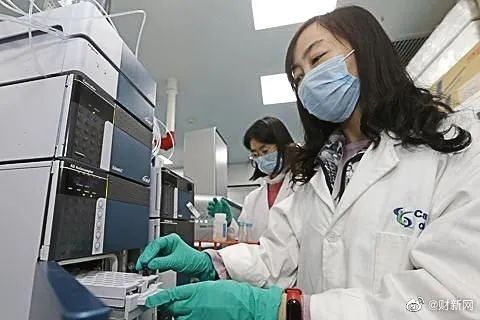
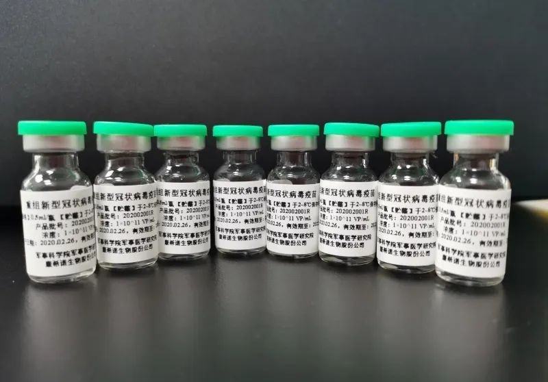
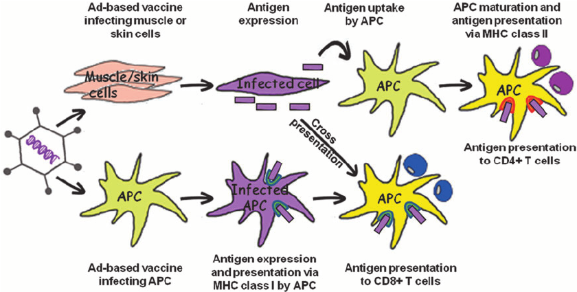

新冠疫苗研发大赛正酣，不同技术路线究竟谁更有戏？
原文链接 备份链接 “当疫情成为新闻头条时，政府就砸钱去做研究。 但疫情新闻一消失，科研资助就没了。” 首例新冠病毒疫苗临床试验在西雅图进行（图片来源：CBS截屏） 2020年1月10日，当中国科学家张永振向世界公布新冠病毒基因序列 …

2020年3月16日，美国生物技术公司Moderna宣布获得美国FDA批准，正式开始新冠肺炎病毒的疫苗的临床试验，首名志愿者已经在西雅图接受了第一剂注射。
就在第二天，中国军事科学院也宣布，他们与康希诺生物股份公司联合开发的新冠病毒疫苗获得国家批准，开始计划疫苗的临床试验。
不能不说，这个研发速度给人留下了深刻的印象，因为从中国发现病毒，学者们进行分离测序公布病毒基因图谱，到第一名志愿者接受注射，只过了短短的两个月时间。这在以前是无法想象的。

在西雅图接受Moderna新冠疫苗注射的首名志愿者｜www.washingtonpost.com
为什么这样说呢？因为传统的疫苗起效的机制是让人类的身体产生抗体，比如减活和灭活疫苗，就是给人体注射降低了致病性和毒性的病毒，或者已经死亡的病毒或者细菌，刺激人体产生免疫力。所以制造疫苗的第一步，就是要分离致病病毒，然后在实验室培育病毒，再想办法减活或者灭活病毒而不失去刺激免疫系统的疫苗作用。同时，研发团队还要做细胞与动物试验，耗时耗力，往往需要几年甚至几十年的时间。所以从常理来说，本次新冠疫苗在两个月后就进行临床试验，实在是快得匪夷所思。

Moderna公司实验室 | www.modernatx.com
疫苗中的“惊奇队长”
根据Moderna公布的临床实验资料，这次试验的是一种全新的mRNA疫苗，疫苗命名为mRNA-1273，并非传统的疫苗的任何一种，给人一种“黑科技技术点”加满，能对新冠病毒实行降维打击的感觉。
那什么是mRNA疫苗呢？大家知道，生物的遗传密码储存在细胞核内的DNA中。DNA的遗传密码掌控了一切生物活动，指导生物体内的细胞合成何种蛋白质，以保证和维持生理活动的正常运行。但DNA只有四个基本编码，CGAT，而且DNA存在于细胞核中，细胞核并不能合成蛋白质。
要将DNA的密码翻译出来合成蛋白质，就需要RNA。RNA将DNA的编码抄写下来（转录），然后从细胞核出来，进入细胞浆。细胞浆内的细胞器按照RNA的编码指示，将这4个基本编码翻译并且合成氨基酸。不同的氨基酸排列组合就形成不同的蛋白质。

转录DNA编码的RNA协助合成氨基酸，进而组成蛋白质 | www.news-medical.net
简单地打个比方，如果把疫苗比做一枚对付病毒的导弹，DNA就是建造导弹的设计原始蓝图，RNA就是让工程师能看懂能指导工厂如何制造导弹的实际图纸，氨基酸就是一个个的零部件，蛋白质则是完成后的导弹。
以前的蛋白疫苗合成，需要提取病毒，测出病毒的遗传编码，在实验室根据遗传编码合成病毒致病的蛋白质。这些蛋白质疫苗进入人体细胞后，在细胞内激活免疫反应，形成抗体。说白了就是在工厂按照图纸造好了导弹再投入实战。耗时很长。那mRNA疫苗就是撇开了工厂生产这一大步，直接将设计图纸投入战场使用。这种全新的疫苗，具有以下几个优势：
1
研发快
正所谓“天下武功，唯快不破”。因为不需要体外合成蛋白质，所以可以直接将病毒致病的mRNA片段通过生物学手段投入到人体细胞内。人体细胞根据病毒的RNA编码， 直接合成病毒的蛋白质，直接形成免疫反应，合成抗体。
流程的缩短，不仅仅缩短了时间，也省掉了体外合成蛋白质过程中，还要进行测试调控修正的步骤。只需要病毒的遗传编码，就可以短时间内设计出mRNA疫苗。这也是为何此次Moderna可以如此快速进行临床试验的根本原因。这相当于直接将设计图纸丢进细胞内，让细胞自己按照图纸合成武器，对抗病毒，而不需要去体外的工厂慢慢造出武器再投入战场，节约了宝贵的时间——1月7日拿到中国学者公布的遗传信息，1月13日他们就设计了第一方案的mRNA序列基因编码，2月24日就已经将合成的疫苗运送到了测试中心。
2
直接模拟病毒

mRNA携带有病毒激发免疫反应的遗传编码 | www.wired.com
mRNA携带有病毒激发免疫反应的遗传编码，进入细胞后，人体细胞将其视为自己的遗传信息，直接按照图纸合成“武器”，这样合成的“武器”比起在体外“加工厂”合成的更加“原厂化”，因为人体细胞不仅仅按图纸合成，还可能在合成后自行添加自然的合成后的修正程序，将武器进一步打磨，就可能更加精准，“杀伤力”更大。
3
威力更强大
mRNA疫苗可以同时编辑进多个蛋白质信息，比如同一病毒不同部位的多个致病蛋白质的遗传编码都可以编写进去，在细胞体内一次性合成，形成更加复杂、功能更全面的疫苗。比如该公司开发中的巨细胞病毒mRNA疫苗同时编辑进去了6个不同的mRNA信息，形成免疫力更强大的疫苗。
4
生产方便
传统的疫苗因为需要多个步骤，合成条件非常严格，很难短期内大量生产。而mRNA疫苗因为省掉了许多中间过程而使得快速合成成为可能。
超级武器也有短板
如此说来，mRNA疫苗简直就是灭霸手上镶满了宇宙能量宝石的手套，威力无穷。只要打个榧子，新冠病毒就灰飞烟灭，难道它就没有什么缺点吗？
显然也是有的。
首先，按照病毒的遗传编码合成mRNA疫苗，选取哪一段遗传信息就至关重要。因为不像传统疫苗有实际病毒作为参考，靠生物学的遗传知识来预测/设计mRNA疫苗颇有点“闭门造车”的感觉。当然，生物学的巨大进步，使得这种“闭门造车”也不是无的放矢，但仍然不可避免出现错误，导致疫苗没有预期的刺激免疫反应的能力。

计算机模拟动画：抗体蛋白围剿进入人体的新冠病毒 | https://www.pharmaceutical-business-review.com/
其次，mRNA不像蛋白质或者DNA那样稳定，非常难以保存，尤其进入人体后，如何避开人体自身的免疫系统，如何不被免疫系统当作外来病原消灭掉，就是个难题。
再次，mRNA疫苗在体外合成后，如何让它进入到人体组织，最终进入到目标细胞内，还能保持原有的刺激免疫反应的能力，也是很难解决的问题。即便mRNA疫苗躲过了人体强大的免疫系统，经过“千山万水，九死一生”进入了预想的细胞内，是否能骗过人体自身的细胞，让它将这一段mRNA当成自己的遗传编码，按照这个图纸合成武器（抗体蛋白质），也很难保障。就比如将一个外来的图纸给工厂，期望这个工厂不起疑心，老老实实地按照图纸合成武器，风险很大。一旦工厂工人起了疑心，不但不合成武器，还很有可能直接“烧掉”这个图纸。
退一万步说，假如mRNA完美避开了上述种种问题，合成了“超级武器” ，但武器的质和量究竟会如何也无人能够保证，有可能造出的武器既质量低劣，还数量低下。而且有没有可能合成了预想之外的蛋白质，反而造成别的损伤，也无法预料。
所以，这个新型的mRNA疫苗设计思路很好，前景可观，但仍然困难重重，至今为止尚没有一个mRNA疫苗通过临床试验，进入临床使用。

疫苗进入人体后起效流程图 | www.ft.com
不仅如此，由于此次新冠疫情来势凶猛，美国国立卫生研究院（NIH）本着事急从简的原则，批准疫苗研发可以省略动物实验，直接进行人体试验。所以Moderna的mRNA疫苗研发进度非常迅速，也是拜这个特殊政策所赐。不得不说，这个举措不是没有风险的。没有达到预想的免疫作用虽然会让人失望，但还不算最糟糕的，如果出现预想外的副作用，形成了不想看到的免疫反应，那才是最让人担忧的。
不过，根据Moderna的公开信息，在开展人体试验的同时，动物实验也在展开。Moderna的mRNA疫苗人体试验，第一期征用了45个志愿者，疫苗注射两次，间隔28天，主要是测试毒副作用，虽然也会同时看有没有免疫效果，但主要目的仍然是测试安全性。
mRNA疫苗VS腺病毒疫苗：
谁能捷足先登？

康希诺生物股份公司实验室 | https://www.scmp.com/
就在mRNA-1273疫苗开始人体试验的第二天，中国军事科学院也宣布，他们与康希诺生物股份公司联合开发的新冠病毒疫苗获得国家批准，开始计划疫苗的临床试验。这个特批也是快得史无前例，从申请到批准只用了一天。3月19日，第一个志愿者在武汉接受了第一剂注射。与美国的试验只隔了3天。
竞赛显然已经开始。
中国学者开发的疫苗名为Ad5-nCoV，是个腺病毒载体疫苗，与美国的mRNA疫苗走的是不同的思路。

康希诺展示的新冠疫苗样品 | https://www.scmp.com/
中国的腺病毒载体疫苗，显然是针对mRNA或者DNA疫苗如何进入人体细胞内这个难题而设计的。从公开的一些资料看，腺病毒是一种很常见的病毒，有很强的进入人体细胞的能力。科学家早就已经利用腺病毒这种不寻常的能力，通过实验室的基因工程改造技术，修改腺病毒自身的遗传信息编码，让它携带我们需要的遗传编码信息进入生物体的细胞内，在细胞内合成预期的蛋白质，完成激发免疫系统或者进行肿瘤治疗等目的。

腺病毒疫苗起效示意图，通过向抗原呈递细胞（APC）传递冠状病毒治病抗原，从而合成抗体 | https://www.researchgate.net
因为腺病毒载体技术的成熟，让腺病毒带上新型冠状病毒的特殊致病抗原而进入人体细胞，从而合成针对新冠病毒的抗体，就成为可能。所以比起单纯的mRNA疫苗，从克服人体免疫系统的清除作用这一点来看，腺病毒疫苗是更有可能进入人体细胞的。再加上冠状病毒此前已经被用于多种生物医学用途，技术相对成熟，所以中国方面开发的这款疫苗才能在如此短时期内完成了设计、实验室测试、初期的动物实验，而快速进入临床试验阶段。根据公开信息，该疫苗的初期动物实验显示了很好的免疫刺激能力，而且没有发现明显的副作用。
不仅如此，腺病毒载体疫苗还有一些突出的优点。比如基因编码容易人为修改，容易被细胞吞噬而进入细胞内，免疫反应强烈，容易大量生产等等。从理论上讲，中国版本的新冠疫苗，可能获得成功的机会，比美国的mRNA疫苗可能更大一些。
但中国的腺病毒载体疫苗要想最后投入“实战”，依旧需要克服一些先天的问题。
绝大多数人的体内已经存在有大量的腺病毒抗体，比如我们常患的普通感冒，腺病毒就是其病原体之一。打个比方，就是我们体内早准备了大量的对付腺病毒的武器，军队枕戈待旦，严阵以待，所以腺病毒注射进入人体后，就很有可能被免疫系统给清除掉，根本不给这个疫苗进入淋巴细胞内再表达遗传信息合成需要的蛋白质的机会，因此产生预想抗体的机会也不是很大。
另外一点，即便合成了抗体，能不能合成足够量的抗体，也是个未知的问题。此外还有一些专业研究报道已经指出，腺病毒作为疫苗载体，或者肿瘤治疗方案时，出现过一些严重的甚至长期的副作用。
总之，虽然这些新的临床试验很让人期待，但这毕竟是最初期的临床试验。先测毒性，通过后再测试有效性，还得扩大受试者人数，做对照试验，虽然生物技术的进步为快速开发疫苗提供了可能，但到完成所有临床试验真正给大众使用，恐怕也不是几个月就可能完成的事情。保守估计，即便一切顺利，也需要至少一年甚至数年的时间。
但愿这些临床试验早日成功，早日惠及人类，给肆虐的新冠肺炎病毒迎头痛击，遏制它的蔓延。
作者：勿怪幸
编辑：朱步冲
本文来自果壳，未经授权不得转载.
如有需要请联系sns@guokr.com
文章已于修改
原文链接 备份链接 “当疫情成为新闻头条时，政府就砸钱去做研究。 但疫情新闻一消失，科研资助就没了。” 首例新冠病毒疫苗临床试验在西雅图进行（图片来源：CBS截屏） 2020年1月10日，当中国科学家张永振向世界公布新冠病毒基因序列 …
原文链接 备份链接 昨日，Science 刊发了美国德克萨斯大学奥斯汀分校 Jason McLellan 团队的一篇关于新冠病毒的最新论文。该团队利用冷冻电镜技术解析出了新冠病毒 S 蛋白的超清结构。这一成果对开发疫苗和抗病毒药物有重要意 …
原文链接 备份链接 除速度外，安全性、有效性，是这场疫苗研发竞赛的重要考量标准。如何权衡取舍，目前领跑的中美两支研发团队给出了不同的解决方案 文 |《财经》记者 赵天宇 王小 编辑 | 王小 “什么时候能打上新冠疫苗，够安全吗？”，这是新 …
原文链接 备份链接 图片来源：WHO 记者：潘金花 “ 专家指出，疫苗在研发时一般都以病毒“最持久”的部分为依据。因此，一款疫苗仍很有可能对多种亚型的病毒起效。 ” 在全球科学界争分夺秒与新冠病毒“赛跑”的过程中，新的挑战正在不断出现。 …
原文链接 备份链接 科研界正展开一场与病毒的赛跑，希望在最短时间内找到特效药物。根据中国临床试验注册中心统计，截至2月27日凌晨，已有271项新冠肺炎（COVID-19）相关临床试验已经或即将开展，除被推荐可能有效的抗病毒药物外，各类中 …